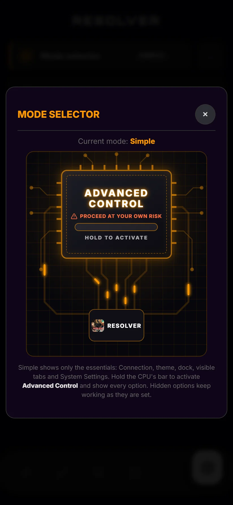
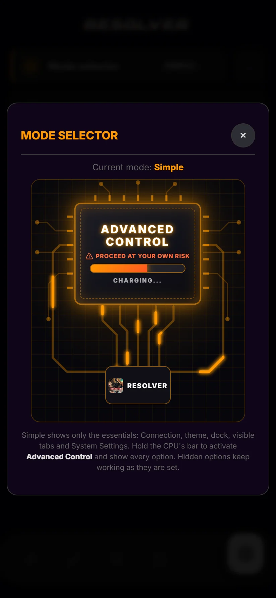
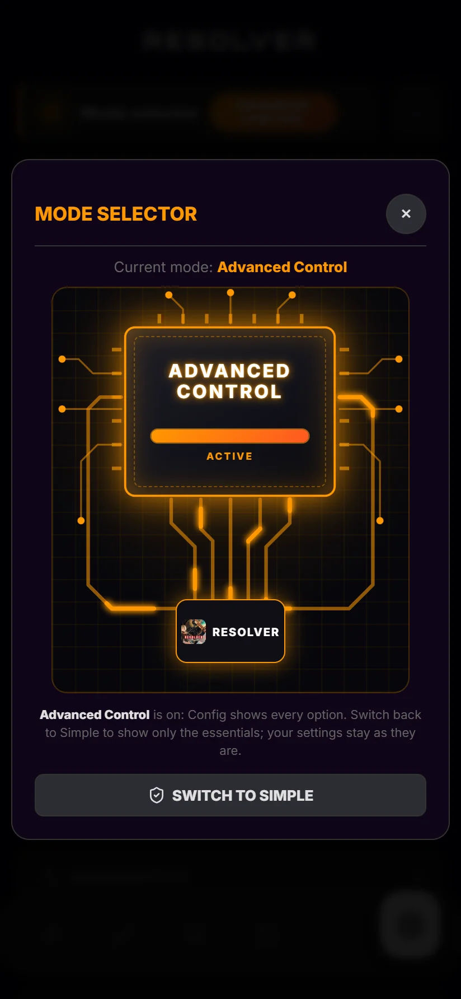
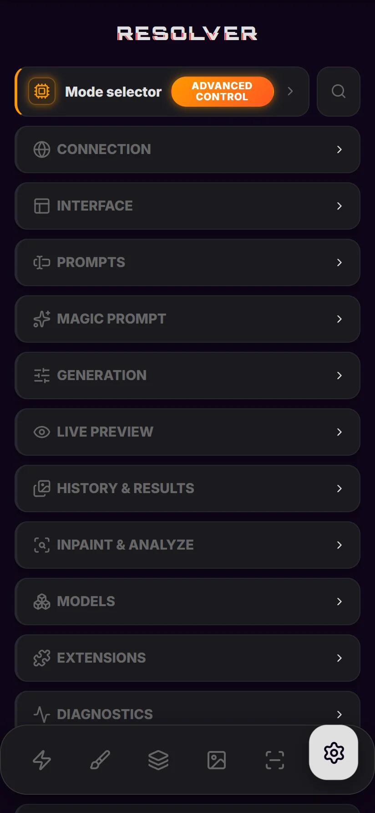

Docs / Settings
Config
The tab holds every setting, in 13 sections that open and close. It starts in Simple mode with just the essentials; Advanced Control shows the rest. All of them are below with their defaults: search, or pick a section.
Simple and Advanced Control
The Mode selector bar at the top of Config shows which mode you’re in.
- Simplethe default
- What you need to connect and look after the app: all of Connection, Dock style, Light mode and Visible tabs from Interface, and all of System Settings.
- Advanced Control
- Every option, in all 13 sections: Simple’s, plus Prompts, Magic Prompt, Generation, Live Preview, History & Results, Inpaint & Analyze, Models, Extensions, Diagnostics, Experimental and the rest of Interface.
Hidden isn’t off
An option you can’t see in Simple keeps working exactly as it is set. Switching modes only changes what Config shows. In these docs, options that only Advanced Control shows carry an Advanced Control tag.

Switching on Advanced Control
- Tap the Mode selector barThe Mode Selector window opens: a CPU wired to the app, with ADVANCED CONTROL · Proceed at your own risk on it.
- Hold the CPUKeep your finger on it until its bar fills (under 2 seconds). Energy runs faster along the wiring as it charges, and the phone gives a small tick every quarter. Let go early and nothing changes.
- DoneThe wiring lights up, the energy reaches the app, the window closes, and the Advanced Control sections fade in. The bar now reads ADVANCED CONTROL.



- Back to Simple: tap the Mode selector bar again, then SWITCH TO SIMPLE. One tap, no hold.
- Remembered: the app keeps your mode when you close it. RESET APP CONFIGURATION doesn’t change it.
- Colors: the CPU and its wiring take the accent of the model last picked on Generate (SDXL orange, Flux cyan, Qwen pink, Anima green, Krea purple). In light mode they’re orange, as the rest of the app.
Finding a setting in the app
- Tap the beside the Mode selector to search. The box takes the bar’s place, finds options by name and opens their section, with the match marked. The × closes the search.
- The search looks only at what your mode shows. In Simple, an Advanced Control option isn’t found: switch Advanced Control on first.
- Tap a section’s header to open or close it; one is open at a time, and the app remembers which.
- Changes are saved at once: there is no Save button.
- Options shown under another (indented below) appear only while that one is on.
Undo everything
System Settings → RESET APP CONFIGURATION puts every option back to its default. Your connections, prompts, History, styles, LoRA settings and presets are kept.
